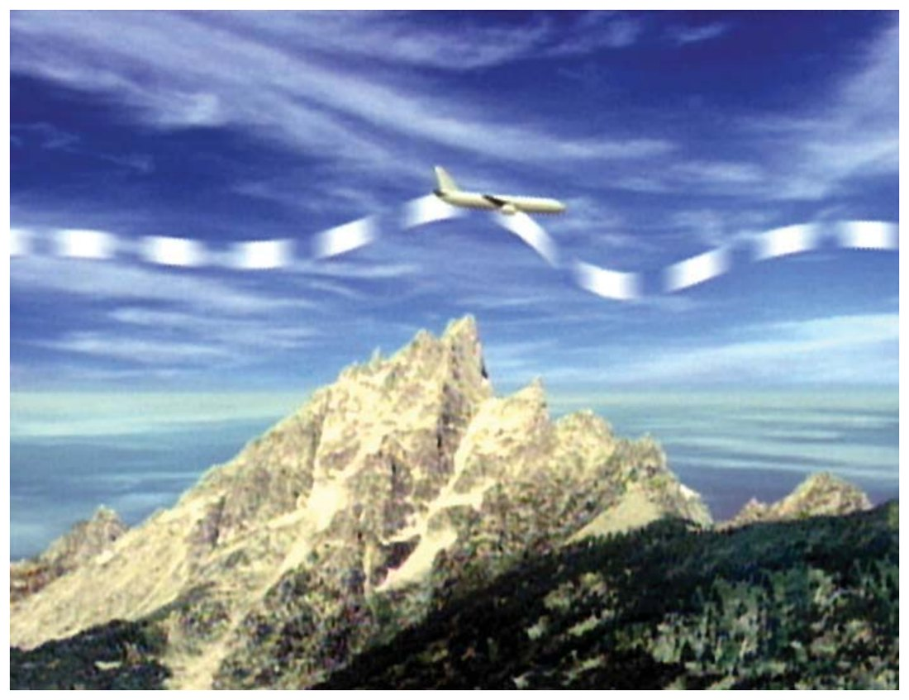
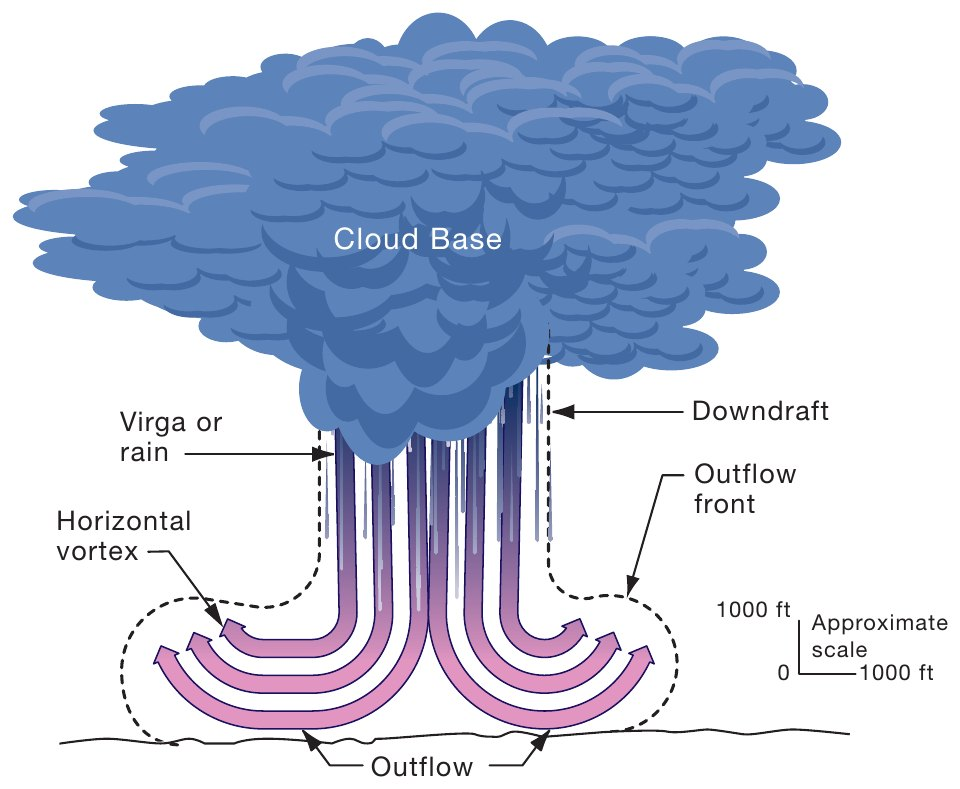
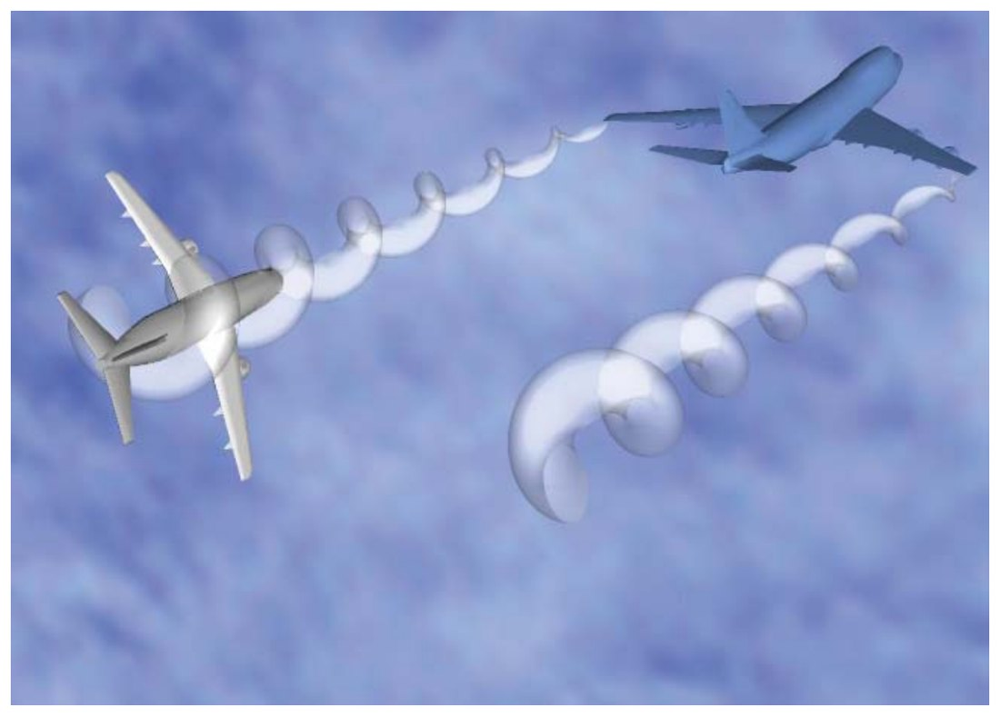

Lesson 12 of 28 — Environmental Threats
Lesson 12: Environmental Threats
Learning objectives
- Describe the upset hazards of turbulence, mountain waves, windshear, wake turbulence, thunderstorms and icing.
- Apply avoidance strategies for each.
- State the main actions for windshear and wake encounters.
Mountain waves, windshear, wake and thunderstorms are environmental threats.
Turbulence and mountain waves
- Severe turbulence and clear-air turbulence can cause large, rapid attitude and altitude changes. Use the recommended turbulence penetration speed, keep seat belts fastened, and avoid large control inputs. The autopilot may remain engaged unless the procedure says otherwise.
- Mountain waves — strong winds across ridges create waves with powerful up- and downdrafts, sometimes marked by lenticular clouds. They can exceed the climb capability of the aircraft and cause speed excursions at high altitude.

Windshear and microbursts
Windshear and microbursts (2)
- Avoid — delay take-off or approach when windshear is reported or forecast, especially near convective weather.
- Recognise — predictive and reactive windshear warnings; unexplained speed changes of 15 kt or more; large vertical speed or pitch deviations.
- Recover — apply the manufacturer's windshear escape manoeuvre: typically maximum (go-around) thrust, wings level, pitch towards the target or flight director guidance, no configuration change until clear, and respect the stall warning.

Wake turbulence
Wake turbulence (2)
- Wake vortices from a heavier aircraft can cause a roll rate greater than the following aircraft's roll authority.
- Respect wake separation; stay at or above the preceding aircraft's flight path; be most careful in calm wind conditions, where vortices persist.
- If you encounter a wake: release excessive back pressure, roll wings level with aileron, and do not use aggressive or alternating rudder (Lesson 8).

Thunderstorms
Thunderstorms combine severe turbulence, windshear, hail, icing and lightning. Avoid them by a wide margin — company guidance typically recommends at least 20 NM laterally from severe cells — and never fly under the anvil or between closely spaced cells.
Icing
- Airframe ice reduces the critical angle of attack, so the stall can occur before stall warning.
- Supercooled large droplets and severe icing create ice behind protected areas, and can cause roll upsets. Leave the conditions immediately.
- Tailplane icing can cause a nose-down pitch upset with flap extension.
- Ice crystals at high altitude can block pitot probes and cause unreliable airspeed (Lesson 18).
Icing is covered in detail in the Cold Weather Operations course.
Key takeaways
- Avoid known threats: windshear, thunderstorms, mountain waves and wake turbulence.
- Windshear escape: maximum thrust, wings level, follow pitch guidance, no configuration change.
- Wake encounter: unload, roll wings level with aileron, no alternating rudder.
- Ice can cause a stall before the warning; ice crystals can cause unreliable airspeed.
Knowledge check
During an approach you receive a reactive windshear warning. What is a typical element of the escape manoeuvre?
Duration: 9 min